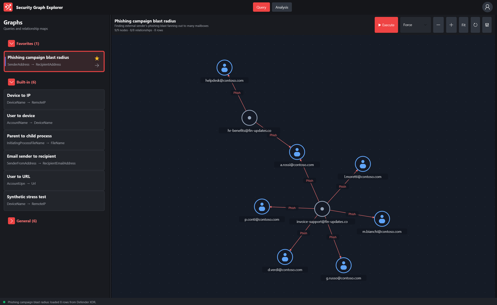

Query KQL
Run a Defender XDR Advanced Hunting query and receive bounded tabular results.
Tabular hunting results hide relationships. This makes them visible.
Turn Microsoft Defender XDR Advanced Hunting results into navigable relationship graphs. Follow devices, identities, processes, URLs, and evidence without losing the query behind the picture.
Run a KQL query, map its output columns, and inspect the resulting entities and relationships on a native canvas. Reusable graph templates keep common investigations close at hand.

Security Graph Explorer keeps the path from raw Advanced Hunting results to actionable context visible at every step.
Run a Defender XDR Advanced Hunting query and receive bounded tabular results.
Map columns to entities, relationships, labels, and properties through a reusable graph definition.
Turn the mapped rows into a navigable graph where connected evidence becomes visible.
Inspect nodes, follow paths, filter relationships, and keep the original evidence in context.
Everything you need is here. Expand each step to explore the workflow and configure access to your tenant.
The live application turns tabular hunting results into a navigable security graph. This walkthrough uses synthetic entities and makes no network requests.
Select a reusable definition containing its KQL and entity mapping.
Execute Advanced Hunting through Microsoft Graph with delegated access.
Navigate connections between alerts, devices, identities, and IPs.
Select an entity to review mapped properties and connected evidence.
You need Windows 10 1809 or later, Defender XDR Advanced Hunting access, and permission to register or request an application in Microsoft Entra.
Create an app registration for accounts in your organization.
Add the desktop redirect URI and enable public client flows.
Add ThreatHunting.Read.All and obtain consent according to tenant policy.
Enter tenant ID and client ID in Settings, sign in, then execute a graph.
Redirect: http://localhostThreatHunting.Read.AllNo client secretDecember 1, 2026
Security Graph Explorer is on track to publish as a signed Microsoft Store app for a secure, straightforward installation experience. Release details will be published here as launch day approaches.
Microsoft StoreUse delegated Microsoft Graph access to execute Defender XDR hunting queries with cancellation, timeout handling, and bounded responses.
Choose source, target, label, entity kinds, and properties. Save the mapping as a reusable graph template.
Zoom, filter, inspect nodes, expand grouped relationships, and optionally use timeline and GQL exploration tools.
Create, import, export, organize, and enable graph definitions using versioned .sggraph bundles.
A focused desktop experience with light and dark themes, protected authentication cache, and no WebView graph renderer.
The project is in active preview. Community feedback on investigations, usability, accessibility, and graph templates is especially valuable.
Security Graph Explorer uses delegated access. You remain in control of the tenant, application registration, sign-in, and data permissions.
ThreatHunting.Read.All
Requires Windows, access to Microsoft Defender XDR Advanced Hunting, and an Entra application configured for public client authentication.

Cloud Solutions Architect · Microsoft Security
I built Security Graph Explorer to make the relationships inside Defender XDR hunting results easier to see, investigate, and share. It is a personal open-source project shaped by practical security investigation workflows and a belief that useful tools should remain understandable.
This is an independent personal project and does not represent an official Microsoft product or commitment.
Try the current build, share the graph workflows your team needs, report rough edges, or contribute a reusable template.